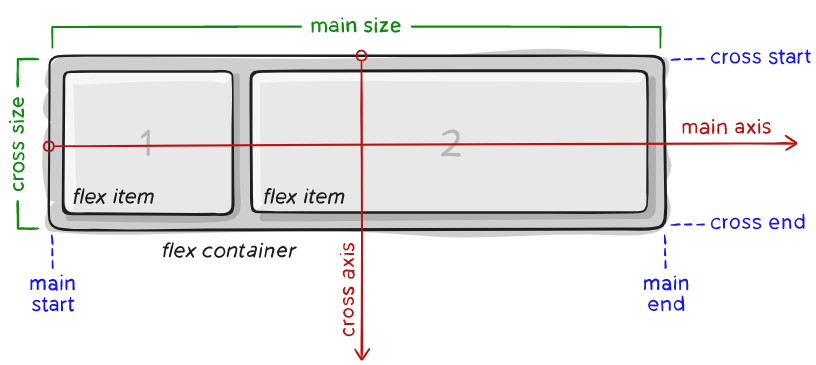

Flexbox Layout
Introduction
Flexbox (a.k.a Flexible Box) is a layout/module aiming to provide a more efficient way to layout, align and distribute space among flex items in a container, even when the size is unknown/dynamic. The main idea is to allow the container to control its items’ size and order to best fill the available space. A flex container expands and shrinks items to fill available space and to prevent overflow, respectively. Flexbox is a direction-oriented layout, in contrast to typical layouts (i.e. vertically-based blocks and horizontally-based inlines); while those work well for pages, they lack flexibility to support large and complex applications.
Browser Support
The browsers that support the Flexbox module/layout

Basics & Terminology
Main-axis
The main axis of a flex container is the primary axis along which flex items are laid out. Beware, it is not necessarily horizontal; it depends on the flex-direction property.
Main-start/Main-end
The flex items are placed within the container starting from main-start and going to main-end.
Main-size
A flex item’s width or height, whichever is in the main dimension, is the item’s main size. The flex item’s main size property is either the ‘width’ or ‘height’ property, whichever is in the main dimension.
Cross-axis
The axis perpendicular to the main axis is called the cross axis. Its direction depends on the main axis direction.
Cross-start/Cross-end
Flex lines are filled with items and placed into the container starting on the cross-start side of the flex container and going toward the cross-end side.
Cross-size
The width or height of a flex item, whichever is in the cross dimension, is the item’s cross size. The cross size property is whichever of ‘width’ or ‘height’ that is in the cross dimension.
CSS Flexbox Properties
| # | Property | Description |
|---|---|---|
| 1 | display | Specifies the HTML element as a flex box |
| 2 | flex-direction | Specifies the direction of the flexible items inside a flex container |
| 3 | justify-content | Horizontally aligns the flex items when the items do not use all available space on the main-axis |
| 4 | align-content | Vertically aligns the flex items when the items do not use all available space on the cross-axis |
| 5 | flex-wrap | Specifies whether the flex items should wrap or not, if there is not enough room for them on one flex line |
| 6 | align-content | Modifies the behavior of the flex-wrap property. It is similar to align-items, but instead of aligning flex items, it aligns flex lines |
| 7 | align-content | Modifies the behavior of the flex-wrap property. It is similar to align-items, but instead of aligning flex items, it aligns flex lines |
| 8 | flex-flow | A shorthand property for flex-direction and flex-wrap |
| 9 | order | Specifies the order of a flexible item relative to the rest of the flex items inside the same container |
| 10 | align-self | Used on flex items. Overrides the container's align-items property |
| 11 | flex | A shorthand property for the flex-grow, flex-shrink, and the flex-basis properties |